Free WordPress theme · Vimeo & YouTube
A video wall for people with lots of videos.
VideoGuru is a free WordPress theme that turns your Vimeo and YouTube videos into one big, fast wall. Filter by category, search as you type, preview on hover, sort or shuffle. No plugins needed.
Download v{{VERSION}} {{SIZE}}See how it works
Free and open source · GPL v2 or later · WordPress 6.0+ · PHP 7.4+
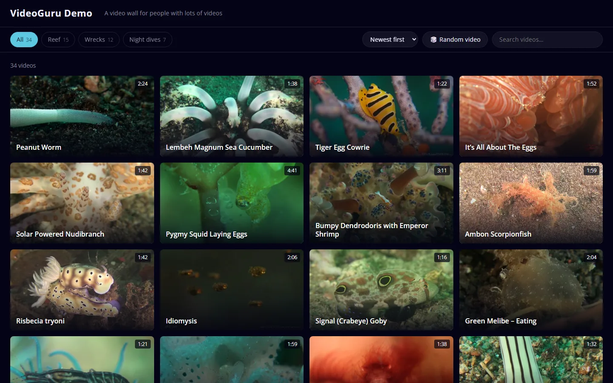
Three steps, no fuss
- 1
Add your videos
Paste a Vimeo or YouTube link into a post. Or open Appearance → Import videos, point it at a YouTube channel, playlist, or a Vimeo channel, group or showcase, and tick the ones you want.
- 2
Make it yours
Pick one of six colour themes or your own colours, add your logo and tagline, and choose the thumbnail size and order in the Customizer.
- 3
Done
Your visitors get a fast wall with instant filtering, search, hover previews, a Sort menu and a Random button.
Everything a video collection needs
Instant filter chips
Built from your own categories, with counts. Choose which category level they come from and hide the housekeeping ones.
Search as you type
Matches titles, categories and tags with no page reload.
Hover previews
Rest the mouse on a thumbnail to play a muted, looping clip. Mouse only, so it stays off for touch screens and reduced-motion settings.
Sort and shuffle
Newest, oldest, A–Z, Z–A or random, for you and for your visitors. A Random button jumps to a surprise.
Vimeo and YouTube
Posters and lengths come from the videos themselves, or use your own featured images.
Import a whole channel
From pasted links, a YouTube channel or playlist, or a Vimeo channel, group, showcase, folder or account. Videos you already have are skipped.
Your colours, shapes and logo
Six colour themes plus custom colours, in dark or light, and eight thumbnail shapes from rounded corners to circles. Your logo and tagline come from Site Identity.
Fast and light
No jQuery, one small script and a self-hosted font. Friendly to page caches.
Search and analytics basics
Descriptions, canonical links, social cards and video structured data (it steps aside if you use an SEO plugin), plus a box for a Google Analytics, Plausible, Cloudflare or Matomo snippet.
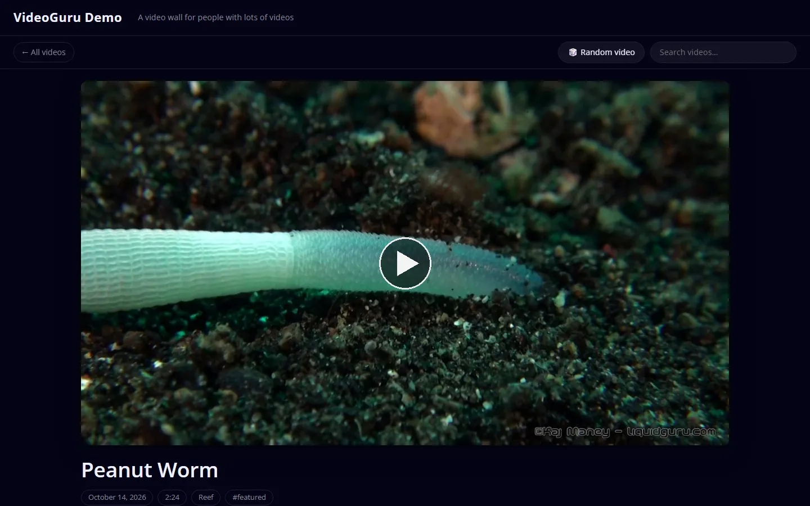
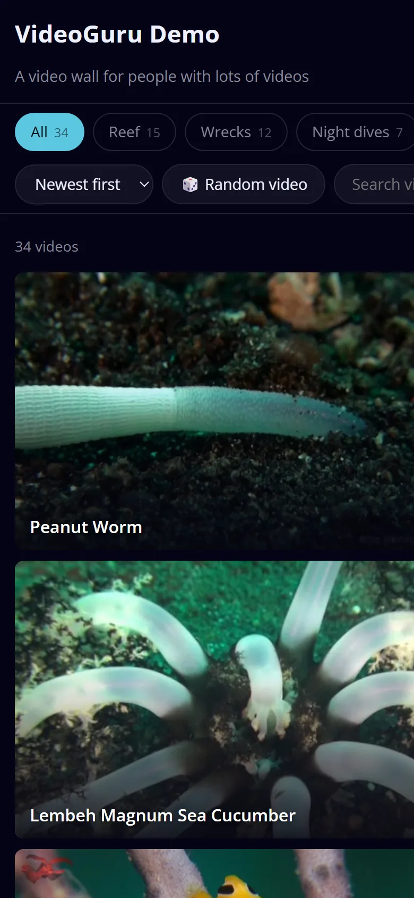
Six colour themes, or your own
Pick one in the Customizer, or choose Custom and set a background and an accent. The text, borders and shadows adjust themselves and stay readable.
 Midnight
Midnight Deep ocean
Deep ocean Charcoal
Charcoal Forest
Forest Plum
Plum Paper (light)
Paper (light)


Make it look different: eight thumbnail shapes
Round, square, cut or wavy. Pick the shape of your video thumbnails in the Customizer. Titles and lengths stay readable in every shape, and hover previews fill the whole tile.
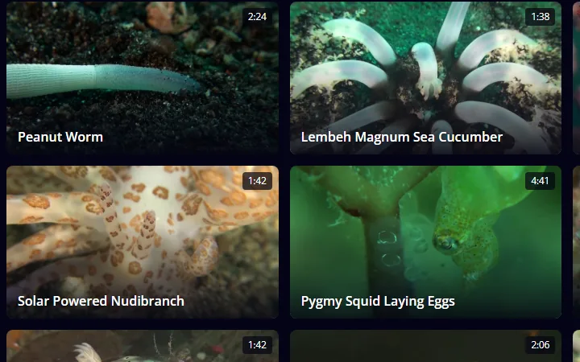
Rounded corners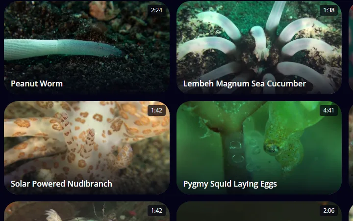
Very rounded corners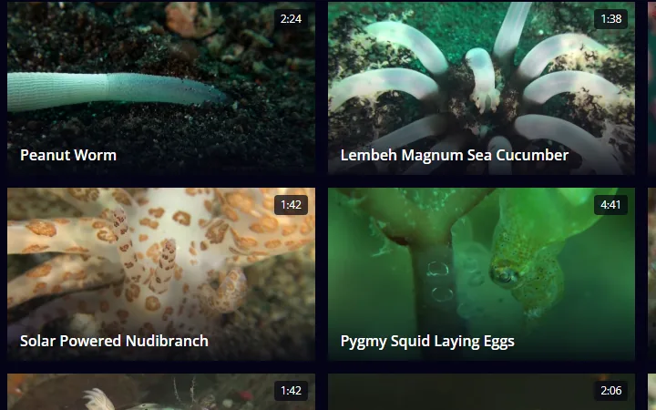
Square corners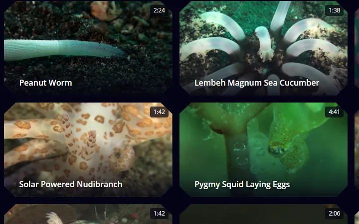
Cut corners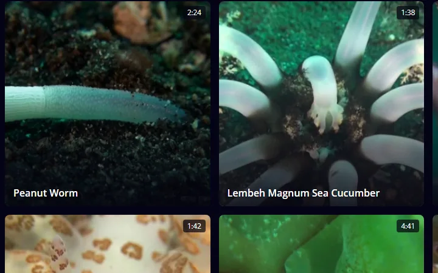
Square tile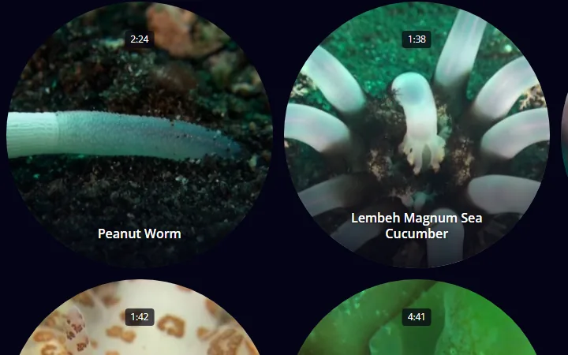
Circle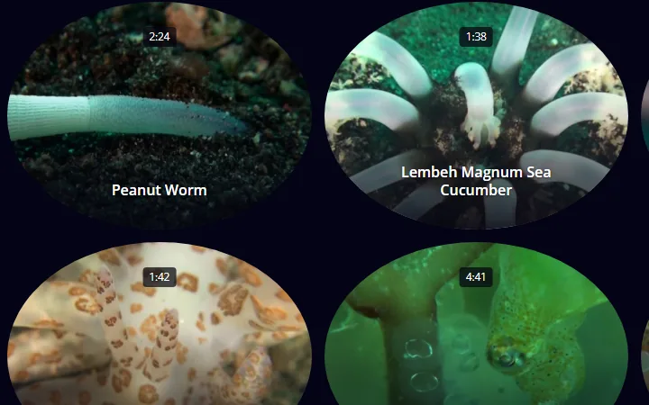
Oval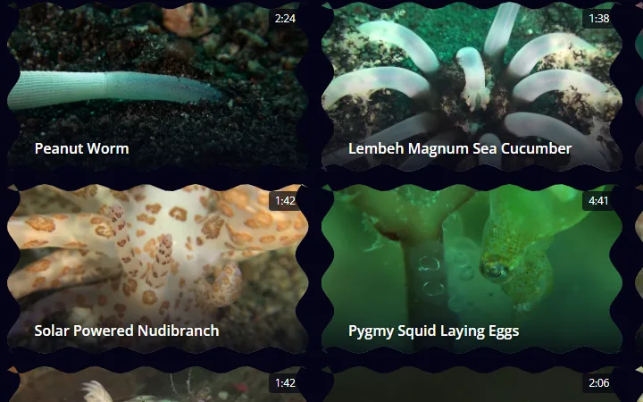
Wavy edges
Install it in a minute
- Download
videoguru.zipand leave it zipped. - In WordPress go to Appearance → Themes → Add New → Upload Theme, choose the zip, then Install and Activate.
- Go to Settings → Reading and set “Your homepage displays” to Your latest posts.
- Add posts with a Vimeo or YouTube link in each, or use Appearance → Import videos. Then tune things in Appearance → Customize.
Each post is one video: the first Vimeo or YouTube link in the post is the video. Posts without one are left off the wall (you can switch that off).
Questions
Is it really free?
Yes. VideoGuru is free software under the GNU General Public License, version 2 or later. Use it, change it, share it.
Do I need any plugins?
No. Everything is in the theme, including the importer and the analytics box.
What happens to my existing posts?
Any post with a Vimeo or YouTube link in it appears on the wall, old posts included. Nothing is changed or deleted when you switch themes.
Does it work with page builders or the Site Editor?
No. VideoGuru is a classic theme with its own layout, so it doesn't use the Site Editor, and it isn't built for page builders.
Where can I see it on a real site?
The idea began with liquidguru.com, a collection of 138 short macro videos. That site runs a close cousin of this theme, with extras that are specific to it.
Who made it, and is it finished?
Kaj Maney, an underwater videographer in Australia, because he couldn't find anything that did this. It is early software ({{VERSION}}) and has been tested on WordPress 7.1 with PHP 8.2. If you hit a problem, please get in touch.
Get VideoGuru
Version {{VERSION}} · {{SIZE}} · free
Requires WordPress 6.0 or newer and PHP 7.4 or newer. Open Sans is bundled under the SIL Open Font License.